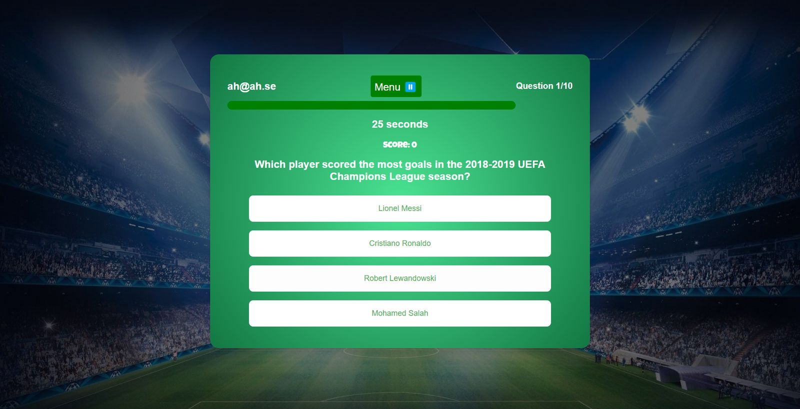
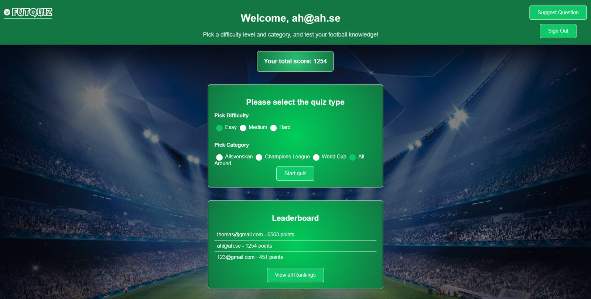
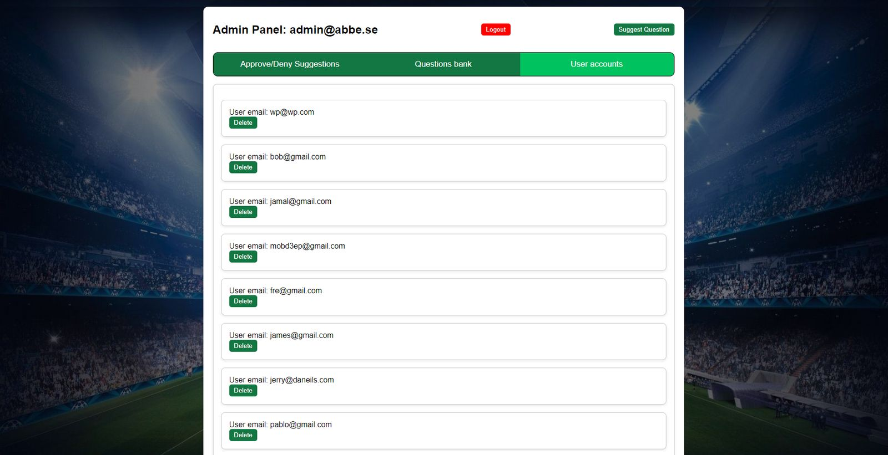
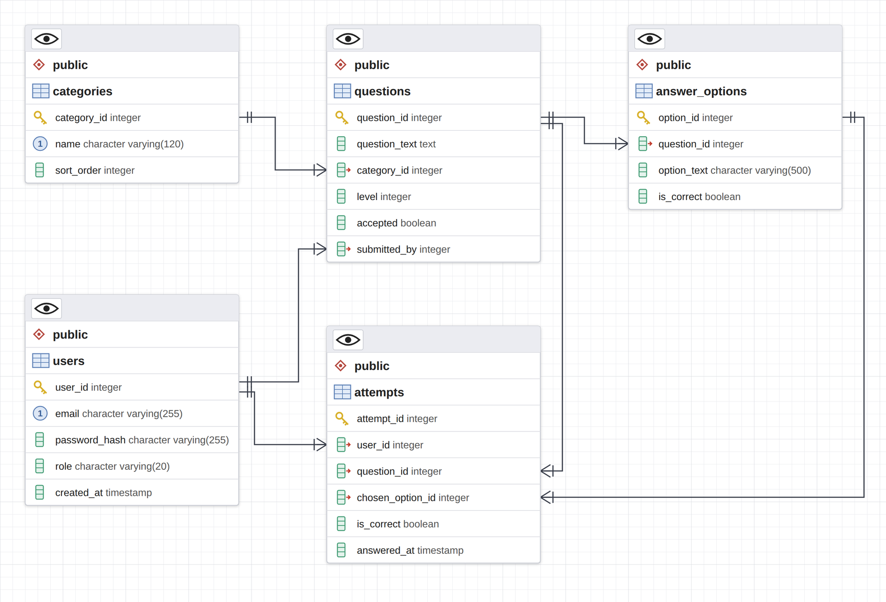
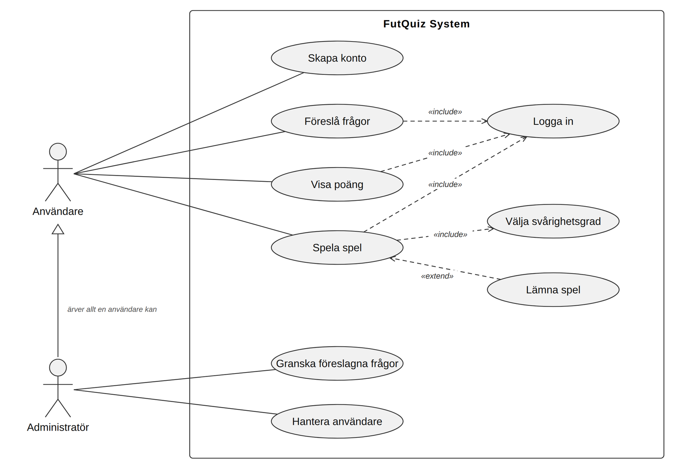
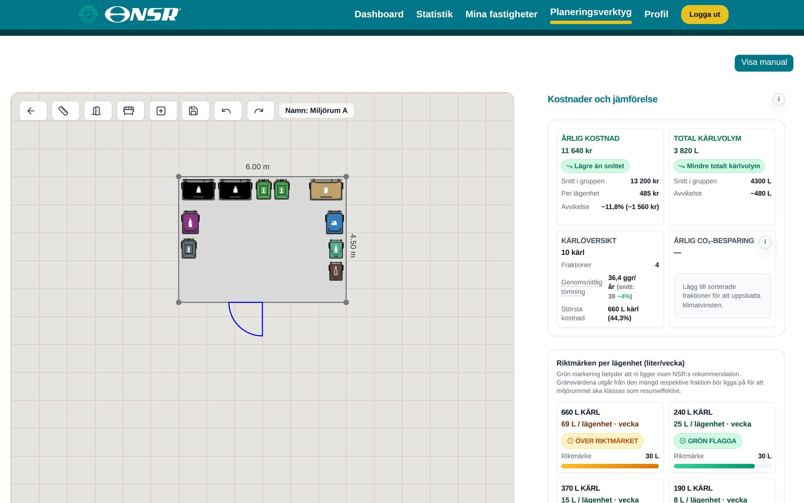
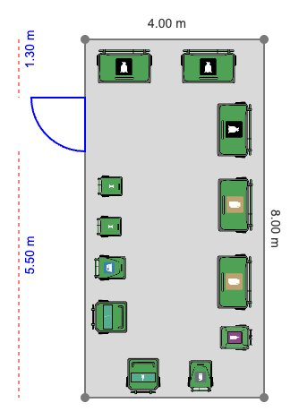
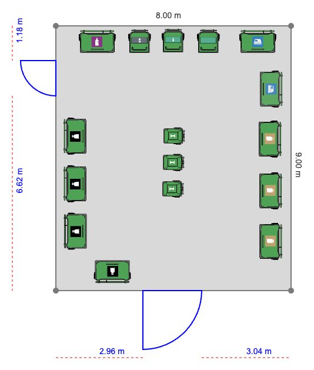
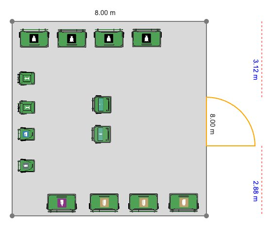
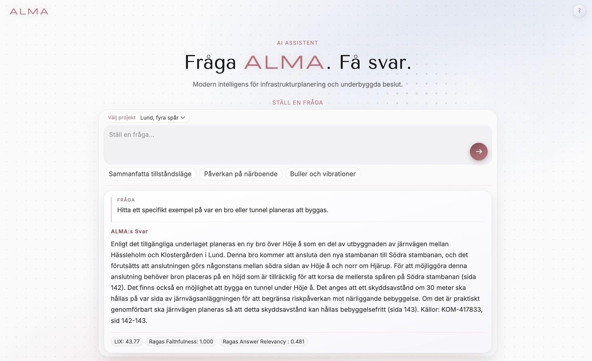

Portfolio, Helsingborg 2026
I'm Abdullah Hamid, a full-stack developer with a BSc in Information Architecture from Malmö University.
Before I wrote production code, I spent two years picking orders in ICA's warehouse in Helsingborg. The job is simple to describe and hard to do well: get the right goods to the right store, every time. Everything I have built since has had the same shape. A homeowner needs the right craftsman. A resident needs the right answer from the right page. A customer needs the right decision.
| Line | Item | Delivered to | Year | Check |
|---|---|---|---|---|
| 01 | ICA GruppenWarehouse operative, reach truck | Grocery stores | 2023 | |
| 02 | FutQuizTeam project, five developers | Football fans | 2024 | |
| 03 | HantverkskollenIntern, then part-time developer | Homeowners | 2025 | |
| 04 | AvfallskompassenDegree project for NSR, eight developers | Property owners | 2025 | |
| 05 | ALMAThesis with Rejlers, a RAG assistant | Residents of Lund | 2026 | |
| 06 | KlarnaBusiness Operations Associate | Klarna customers | 2026 |
A football quiz in the style of Kahoot, and the first time I built software in a team. Five developers, 1,100 hours, run in Scrum sprints at Malmö University.
Players pick a difficulty and a category, answer ten questions against a 30-second clock and land on a leaderboard. They can also suggest their own questions, which an admin approves into the live question bank.
We ran it like a real project, with requirements prioritised in MoSCoW, a design document with an ERD and use-case and sequence diagrams, a test document, time reports and four review sessions with our supervisors.
I owned the team's usability analysis, with a focus on phones. I chose five of Shneiderman's eight golden rules that matter on a small screen and turned them into a checklist. The first audit, at the end of sprint 3, found real gaps: no feedback on right or wrong answers, a score you only saw at the end, no visible timer, and no way to pause or quit a quiz you started by mistake.
The team fixed every one of them. The second audit, in sprint 4, passed all five rules.





A checklist only helps if someone runs it twice. The second audit is the one that proved the first was worth doing.
A young startup in Helsingborg that helps people find the right craftsman, compare prices and request quotes. I came in as an intern and stayed to help build the company.
I joined while the company was still small. I learned the codebase, got to know the product and saw how real users moved through it, from searching for a carpenter to sending a quote request.
Alongside my studies I kept working with the founding team. I maintained and improved the platform in Next.js, Node.js and PostgreSQL and built features end to end, with a focus on architecture, usability, clear pricing and code the next developer can maintain.
Hiring a craftsman is a big purchase that most people make rarely. Hantverkskollen tries to take the guesswork out of it. Visitors can browse firms by trade and city, see hourly rates, travel fees and base fees where firms have listed them, estimate a job in a price calculator with or without the ROT deduction, and ask for up to five free quotes.
The site also publishes price guides and articles for each trade, which bring in visitors from search and help them understand a quote before they accept it.
In a small team there is no ticket queue between you and the user. If the calculator shows a confusing number, people stop trusting the whole site. That made me care about transparency in the interface as much as about the code behind it: show what a price includes, say where a number comes from, and keep the flow short.
Välj yrke och stad, svara på 3 till 5 snabba frågor.
ROT ger 30 % avdrag på arbetskostnaden, inte på material.
Jämför firmor, timpriser och ROT.
Tar bara 1 minut. Upp till 5 gratis offerter.
Simplified drawings of three flows on hantverkskollen.se: the price calculator, a trade and city listing, and the quote request. Labels are in Swedish as on the site; the firm and the figures are examples.
A marketplace runs on trust. Every number on the screen has to be one the user can check.
A planning tool where property owners draw their waste room to scale, place the bins and see what it costs. Built by eight developers as a degree project for NSR in north-western Skåne.
When a property owner plans a waste room, the questions are practical. Do the bins fit? Can the door open? Are we paying for more volume than we need? Avfallskompassen answers them on screen. You set the room's size, add doors, drag in bins for each type of waste, and the tool shows the yearly cost, the total volume, the estimated CO₂ savings and how the property compares with similar ones.
The frontend is React and TypeScript on a Spring Boot API with PostgreSQL, JWT authentication and a CI/CD pipeline in GitHub Actions that ran the tests on every push.




Room plans saved by the app during development. Screens are rendered from the project's source with sample data.
With eight people in one codebase, the small things decide the pace: clear components, shared styles and a pipeline that catches mistakes before a teammate does.
"Fråga ALMA. Få svar." An AI assistant that answers residents' questions about the railway expansion through Lund, using only the official documents. Built with Simon Gorny as our thesis, together with Rejlers.
Trafikverket's project to expand the railway through Lund to four tracks produces hundreds of pages of consultation documents. They are public, but almost impossible for a resident to read. Rejlers coordinates communication with the people affected and answers the same factual questions every day.
ALMA indexes the project's PDFs and its public StoryMaps pages, finds the passages that match a question and writes a short answer in Swedish with the sources listed. Every answer also shows its readability score and two quality scores.

PDFs parsed with Docling, StoryMaps scraped with Playwright, split into chunks of 500.
BM25 keyword search next to OpenAI embeddings in ChromaDB.
Reciprocal rank fusion, then a Cohere reranker picks the top 10.
GPT-4o-mini writes the answer in Swedish, with sources.
LIX readability and Ragas scores, also run in CI on every change.
68 is average. Above 80 counts as excellent.
Acceptable accuracy on predefined tasks (3.25 to 4.25 of 5), lower on the professionals' own questions (2.33 to 3.33). It simplified rather than invented.
Neither LIX nor the Ragas scores tracked the experts' ratings, and answer relevancy returned zero for 40% of the Swedish answers.
5 of 9 residents felt confident in answers the professionals had flagged as partly unreliable. A well-presented AI earns more trust than its accuracy justifies.
Building the AI was the fast part. Proving whether people should trust it took real users, real experts and a test that runs every time the code changes.
My thesis ended with a trust gap: people believe a confident AI more than they should. My job at Klarna starts right there.
An AI model makes a decision on a customer's errand.
I analyse the decision, find the errors and correct them so the customer gets the right outcome.
Structured feedback goes back to the teams, so the model and the workflow get better over time.
As a Business Operations Associate, I review and analyse AI-driven decisions on customer errands. I work with confidential banking and user data under strict rules for data handling and privacy, and I work across teams to improve the model's accuracy through structured feedback.
It is the same job I had on the warehouse floor and in the thesis, at a much larger scale: check that the right thing reached the right person, and when it didn't, find out why.
Next order
Next.js, React, TypeScript, Spring Boot, Node.js and PostgreSQL, on a live startup platform and in an eight-person client project.
A deployed RAG system with automated evaluation in CI, measured with experts and end users.
From intern to part-time developer, building features end to end next to the founders.
Usability audits, AI evaluation and daily review of AI decisions at Klarna.